|
|
2011: Blades Hit The Ice |
|
This end-of-year yearly blog started before the word "blog" was invented, it was then referred to with the old-fashioned word "letter." It is also available in Portuguese. Edições anteriores estão aqui.
|
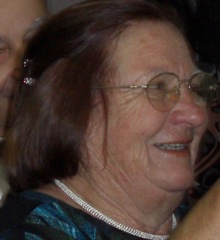 Leonor Cunha |
We spent our 2010 Christmas and New Year Holidays at Vovo's beach house in Xangrila' in Brazil. It was great to see family and friends there again. One of the highlights for Daniel was a rainy afternoon that just he and me went to the beach and we got invited to join in an "all-ages" pick-up soccer game. With my non-exhisting soccer skills playing that game on the rain for 1.5 hours was torture. But Daniel was having so much fun that it was worth it. Two days before Christmas Leonor, a very good friend (and mother of my college mate Beto, suddenly passed away in Porto Alegre. Thus I dashed from the beach to Porto Alegre to be with them during the overnight vigil and then drove back to the beach to bake cookies for Santa with Daniel. I was very saddened with Leonor's passing but felt fortunate that I could be there to share this moment with my close friend Beto, her only son. After Christmas we took a couple of days with my sister Salete to go to the hill towns where we got to see "Gramado's Christmas" a great show put on the streets of a very nice touristic city in the South of Brazil. It was a great event, but Daniel was puzzled as to why they would create artificial snow in the middle of the Summer. When we came home from the beach in Brazil to Edmonton we found about a meter of snow accumulated on our walks. A week later we kept our family tradition of a "Christmas-after-Christmas" celebration at home with a few friends. |
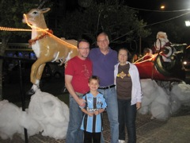 Scott, Daniel, Nelson, Salete (Sao Francisco, RS, Brazil, December 2010) |
|
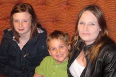 Mikaela (Mak) Chen, Daniel Meadows and Belinda Campbell (Calgary, May 2010) |
In February we got a phone call from Daniel's half sister, Mak, to let us know that their mother, Belinda, had passed away in Calgary. We learned later that she had had sudden major bleeding in her brain and had suffered a very quick brain death. She still survived a week after that, but there was no hope of recovery. She was only 38 years old. It took several months for Daniel to comprehend what had happened because he only had contact with her once a year. In May, when we went to visit Mak and their other half-sister, Emily, Daniel saw Mak without Belinda for the first time. That is when it was clear to me that he realized that his mother was gone. I am glad that Daniel and Belinda had had such a nice visit the year before and I got pictures of them having fun together. In November Emily came with her family from Calgary to Edmonton to visit with Daniel. Daniel was very happy to share some of his greatest passions with her: we went together to an Edmonton Halloween Symphony for Kids (Daniel loves symphony concerts) and Emily's family came to see Daniel play a hockey game. |
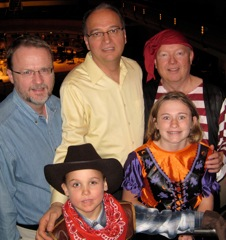 Scott, Nelson, Howard, Daniel and Emily (Winspear Centre, October 2011) |
|
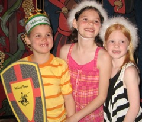 Daniel, Lexi, and Laureen in Disney (March, 2011) |
In March we got busy traveling. I went on two trips to Europe and Scott went on two trips to Florida. On my first trip I went to Karlshure and also visited Stuttgart for a weekend. On the second trip I briefly visited Frankfurt, then went to Saarbrucken, Muenster, Rheine, and Cologne in Germany, then to Chamonix in France and a brief stop in Geneva in Switzerland before flying back home. I went to Rheine to visit with my friends Matthias and Anja. They are a couple that I met on a flight from Houston to Amsterdam in December of 2009. We have kept corresponding regularly via email, and they invited me to come and visit during my trip to Germany. They were very gracious hosts and I had a wonderful time visiting that part of Germany, took a cruise in the Rheine river, and went up the stiple in the great cathedral in Cologne with Matthias. The week in between my two trips to Germany Scott went to Florida for a meeting on the project that he was working on. Then he came back just in time for me to leave again. But this time, while I was traveling in Europe, Scott and Daniel went on a trip to Orlando with Scott's parents, aunt Diane, and Daniel's cousins Laureen and Lexi. With three kids of similar age, they kept busy going to amusement parks and having fun at the pool in the condominium where they stayed. |
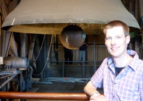 Matthias at the Catedral's Bell Tower (Cologne, Germany, March, 2011) |
Late in 2010 we discovered that some of the issues with Daniel in school were related to the fact that he has Attention Deficit Hyperactivity Disorder (ADHD). Once we started treatment his ability to focus improved significantly. In addition he has some combination of what professionals call "Learning Disabilities." Both Scott and myself went to several seminars to learn about the condition and about best practices and strategies.
Late in 2010 I started a "home school" activity with Daniel. Every Saturday and Sunday that we are both home we spend the whole morning doing home school. I discovered two very good programs, one called Jump Math and the other the Reading Clinic, which uses a method called "Phono-Graphix" to teach reading. This method worked much better for Daniel than the memorization of frequent words that the school was using. We also worked through the entire BBC Dance Mat Typing program so that Daniel could get some keyboard skills. We kept working on home school every week throughout the year. My main goal was for him to build up his academic confidence and to be able to remain integrated in our neighborhood school. We had counselors working with Daniel to help him deal with the reactions of his classmates to his condition. We also had to do lots of advocacy and work with the school, and I joined the school parent's council to ensure that we are well connected with the school. One thing that we learned is that to be an efficient advocate you have to "come out" and talk about these issues with other parents and people around our lifes. Now Daniel is doing well. He is still behind his class, but there is an individualized academic plan for him. He is learning at a pace that he can manage. He is happy to go to school and he feels like he is successful at school. My expectation is that we will have to be doing additional work at home with him for a long time. People with ADHD have to deal with their condition for their entire life.
|
In April I managed to make a brief visit to my alma-matter school in Austin (I was an invited speaker at the Computer Architecture seminar at UT Austin) before going to Toronto for a regular research meeting at IBM. It was great to stay overnight at Joydeep Ghosh, my Ph.D. supervisor, and to visit with his family. Too bad I missed seeing Egidio in my brief visit to Austin. |
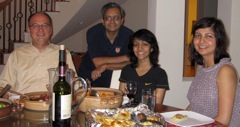 Nelson, Joydeep, Robina, Samira (Austin, TX, April 2011) |
| 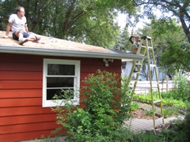 |
We had two major home improvement projects this Summer. The first was to replace the roof of our garage. It was a great family project. Daniel was a great help throughout the project and Scott worked very hard with me on that too. The second one I did by myself. It was to open up all the soffit around our house to cut larger vents to allow better ventilation in the attic. The goal is to prevent ice damming from melting snow by keeping the attic cooler during the Winter. It was a lot of work, but when I was done putting everything back into place, no one could tell that I had done anything! While I worked on the soffit Scott was busy with the garden. He did some new landscaping and planted a nice vegetable garden. This Summer we also hired a company to redo the concrete for our garage and driveway. Then we got a very nice basketbal hoop for Daniel to play in the driveway. |
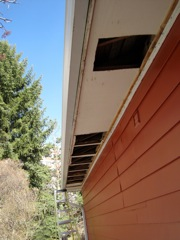 |
In June I went to a conference to San Jose in California. It was great to catch up with professional colleagues such as Barbara Rider and Laurie Hendren and many others. I was also fortunate to meet a former University of Alberta student, Luca Piredu, who I enjoy to visit with and who has moved to Italy several years ago. I also took the opportunity to catch up with my friends Guillaume and Kurt, from my graduate school days, while I was there. Peng Zhao, my former Ph.D. student, now works for Huawei. He invited me to give an invited talk at Huawei while I was in San Jos'e. It was great to get to know a bit more about this fast growing company and to catch up with Peng.
On the way back to Edmonton I stopped by Corvallis to give a talk at Oregon State University and to meet and catch up with my friends Kagan and Irem (also from my Austin days).
Daniel had a very busy Summer with "Cool School," which was a combination of sports and academics, and many sport Summer Camps. His favorite ones were soccer and hockey camps. In some weeks he did half-day camps so that we could work on "home-school" for the rest of the day.
|
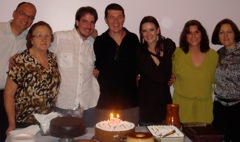 Nelson, Dioraci, Tiago, Marco, Maiara, Fernanda and Salete (Brasilia, July, 2011) |
In the mid of July I went on a small academic tour to Brazil where I visited three universities. I was very well received by Liria Sato at University of Sao Paulo (USP); Edson Borin and Sandro Rigo at Unicamp, and by Alba Melo at University of Brasilia (UnB). It was whirlwind tour with a talk at a different university on a different city each day, but it was a great way to reconnect with some of my colleagues in Brazil. My dear friend Gloria took a bus from Santos after work and went to Sao Paulo so that she could treat me to a very nice and special one-on-one dinner on my only night in Sao Paulo. On that trip I also got to visit with my whole family in Brasilia where we celebrated by brother's 50th birthday. After the celebration we went on an overnight trip to Chapada dos Viadeiros, a beautiful place with a rugged landscape and many water falls in the state of Goias. Another highlight of this trip was to reconnect with Joao Campari, a dear friend that I had not seen since our Austin graduate school days. It was also great to meet Otavio, Joao's partner for many years. Thus, this year I got to see most of my friends from my years in Austin Texas |
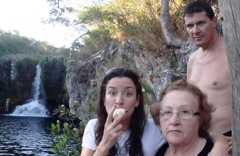 Maiara, Dioraci, and Marco (Chapada dos Viadeiros, July, 2011) |
On my way to Brazil I made a stop in Dallas to drop Daniel off with his American grandparents. He had over a week of intense fun at their house. Grandma arranged many playmates and visits for him. He also had a great time helping Grandpa count and organize his extensive historical guns collection. While in Dallas I had time to go and have lunch with my friend Pedro and his wife Claudia. It was nice to catch up. I picked Daniel up in Dallas on my way back from Brazil. During this time Scott took some personal time off traveling in the Canadian Rocky Mountains (I joked that this was the best plan for a family vacation: put each member of the family into a different country!). Unfortunately Scott had two shoulder dislocations during his trip and ended up going to hospitals in an ambulance twice.
| 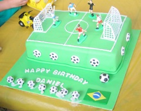 | 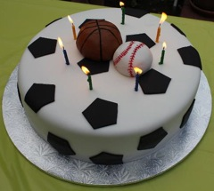 |
The traditional two birthday parties for Daniel in August were a great success. We had such a beautiful day for our garden party at home and everybody was in a great celebratory mood. For the kid's party at the park a friend organized a soccer game and we got commemorative t-shirts printed for all the kids that came. My friend Silvia made one beautiful theme cake for each of the parties. As per tradition Gaga and Grandpa came to Edmonton to help organize the parties and to celebrate with us. At our Garden party we toasted Juana and Scott's 50th Anniversary which took place in June. |
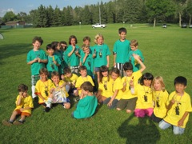 |
| 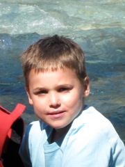 |
Late in August Scott, Daniel and I went on a trip to a lodge in the Mountains. In previous years Scott and I had gone to back-country lodges that can only be accessed by +/- 10 Km hikes. This time we wanted to take Daniel along with us and we were not sure that starting with a 10 Km hiking was a good idea. Thus we went to the Cross River Wilderness Centre, a lodge to which we could drive. It is in a beautiful spot with very nice hikes nearby, and they had a wonderful chef that prepared great meals. The three of us went on a day hike. Daniel was very excited because he did very well and enjoyed very much hiking. He wanted to know when we would go back to a place like that. Our hike was along the Cross river, we walked by a large canyon with some beautiful waterfalls and stopped for a picnic at a nice river beach where the Cross river meets the Kootenay river. The water was extremely cold. Nonetheless, being a Canadian kid, Daniel stripped to his underwear and waded into the water for a while. |
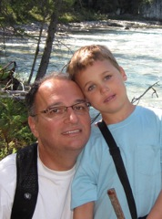 |
Right before the start of the term I had to chair an expert panel at an international conference that took place at the Banff Centre. It was nice to meet Tulsi, Parimala, and their kids there. I took Scott and Daniel with me and they enjoyed visiting around Banff while I worked. On the day that we went back we all went to a short horse-back riding at the base of the mountains. Daniel was proud that he could handle his horse well.
Early in September hockey happened to our family. Daniel has been interested in hockey since he was 2-year-old and has always watched hockey on TV. His favorite thing to do in the home-school breaks is to play floor hockey in the basement. Thus, in the Winter we put him on an a learn-to-skate program in our neighborhood. The lessons were in an outdoor rink and the temperature cut-off for lesson cancellations was -18 C (-0.4 F). With the cold February and March that we had in Edmonton, it was often -18 C when we were having the lessons. Daniel liked skating so much that he wanted to stay skating after the lessons even with such low temperatures. Then in August Daniel had a hockey camp at the University. It was only 3-hours per day, but Daniel was always exhausted at the end.
|
Throughout September Daniel had hockey try-outs to establish in which tier he would play, and then early in October we met his coach and team: "The Silver Bullets." They were a tier 8 team (tier 1 is the highest, tier 10 is the lowest). We were very fortunate, Coach Mike is outstanding and we all like him very much. Daniel ranks Coach Mike as the best teacher that he ever had. Having a child in hockey is a very big commitment and we had no idea what we were getting into until we became "hockey parents." There is a practice and a game every weekend. Even though there are more than 35 skating rinks in Edmonton, ice time is a very scarce resource (there are also more than 60,000 kids playing hockey in the province of Alberta). Therefore, the times and locations for practices and games vary a lot. One Saturday morning we had to be at the arena at 6 AM for a hockey practice. Plus, there is all the equipment to keep track, carry, put on, take off, etc. For safety reasons, if one piece of equipment is missing, the child cannot go into the ice. Also, if you want your kid to have fun on the ice, he needs to improve his skating skills. So, we started taking Daniel some evenings during the week to "public skating," which is one-hour in which an arena is open to anyone that wants to come and skate around the ice. That led us to discover this entire Canadian culture to which we were oblivious until then. In a way it is similar to Spanish or Italian villagers going for a stroll around the Piazza after dinner. The difference is that Canadian lace up their skates and loop around an arena. |
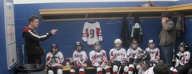 Coach Mike's instructions before a hockey game. |
We have recorded some of Daniel games and put some clips on youtube: Jacob's Goal, Taytum's great shot (Taytum is the only girl in Daniel's team), Matthew's goal. Daniel usually plays defence, his jersey is #16. In one game in December he played as the goal keeper (something that he had wanted to do for a long time). He did very well in the goal and was cheered by his whole team and parents when we got back to the locker room. Playing hockey has been great to boost Daniel's confidence and to increase his circle of mates.
In October we learned that our close friend Fran Moore is moving back to Brisbane in Australia. Since Daniel was born Fran has been an Auntie/Grandmother figure in his life. She has always been our main support when we need some to watch over Daniel because of our travels or professional responsibilities. Fran was also the manager for my department. She will be sorely missed both personally and professionally. When Daniel learned that she was moving, his first reaction was: "But who will take care of me then?"
The contract under which Scott was working on research at the Faculty of Medice ended in September. He still kept busy finishing off some of the writing for that research for a few months. Now he is looking into what to do next.Although I was teaching two classes in the Fall, I still managed to take two professional trips, one to Toronto to meet with colleagues at IBM, and also for the 10th anynversary of a workshop that we started at the Center for Advanced Studies Conference (CASCON) a decade ago. It was nice to go out and celebrate an important promotion of Kit Barton, a very successful former Ph.D. student who joined IBM years ago. My second trip was to Seattle to attend Supercomputing, a big conference and an amazing trade fair for high-performance computing. There I had a chance to have a rare one-on-one dinner with Guang Gao, my post-doc supervisor when I was in Delaware, and a great friend.
At the University I continue to stay very busy with my many commitments to my graduate students, to the university, and to the research community. This year I became a member of the University Senate, which put me in contact with a much wider circle of people from the community that supports the university. One thing that has been nice in the last few weeks is the recognition of my teaching by my students. Receiving a note from the Dean highlighting that my students rank me as one of the top instructors in the Faculty of Science and receiving personal notes from students stating that I afforded them one of the best learning.experiences in our program feels nice. It was even more meaningful when some of these notes came from students that did not very well (grade wise) in the class. I believe that my teaching has benefitted a lot from my work at home with a child with learning disabilies.
Early in December Scott underwent a surgery to address the issue with his shoulder dislocations. It was a day surgery and he did not need to stay overnight in the hospital, even though he was under general anhestetic for close to two hours. After the surgery he was under strong pain killers and has to keep his arm imobilized for six weeks before starting therapy. The evening after his surgery I was cutting a squash for dinner --- I was in a hurry to get it done before going to pick Daniel up at the after school care --- and the piece of squash that was under my chef's knife slipped and the knife caught the end of my thumb. Thus, I ended up in the emergency to get several stiches through my nail. I will not loose any function on my thumb, but there will be a scar. But for now Scott can only use one arm and I have only one opposing thumb. It is a challenge to tight skates and Daniel is the only one that can do buttons in our house.
This was such a great year to reconnect with mentors and friends. I am now finishing composing this blog as we are about to take off to Toronto where we will connect to Dallas in our way to Ardmore in Oklahoma where we will bake the cookies to expect the arrival of Santa Claus at Scott's parents house.
We wish you all very enjoyable holidays.
Nelson, Scott & Daniel{kind=link}
{kind=link}
{kind=link}
{kind=link}
{kind=link}
{kind=link}
{kind=link}
{kind=link}
{kind=link}
{kind=link}
{kind=link}
{kind=link}
{kind=link}
{kind=link}
{kind=link}
{kind=link}
{kind=link}
{kind=link}
{kind=link}